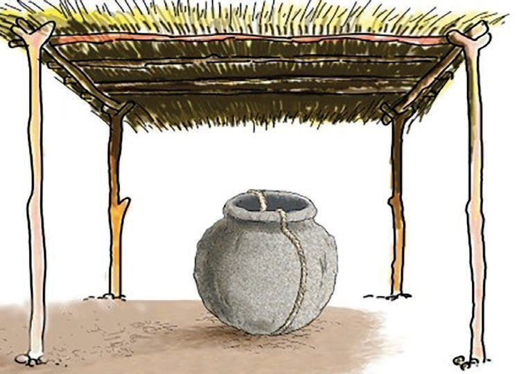

- (i)
Separate the pot from the two sides of the plaster layer. This process will yield two pieces that form the pot figure, commonly referred to as moulds; and
- (j)
Clean and smooth the interior surfaces thoroughly. These moulds will serve as essential tools for producing a variety of flowerpots.
Steps to create a pot using a mould
The following are the steps for making a pot using a mould:
- (a)
Begin by laying a light nylon sheet inside the mould to prevent the clay from sticking to it;
- (b)
Press the clay into the mould to form a layer, similar to coconut flesh in its husk, aiming for a thickness of about 2 cm;
- (c)
Smooth out the surface of the clay for evenness;
- (d)
Create scratch marks along the edges of the clay; this helps to strengthen the bond when the pieces are joined later;
- (e)
Allow some time for the malleable clay to set so that it does not get dented;